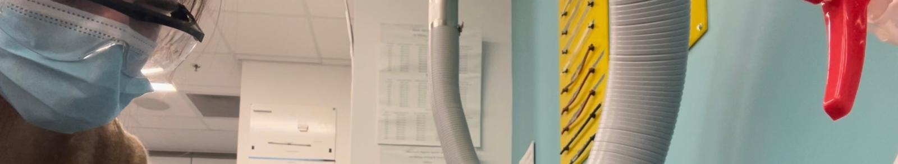

Home
Projects
Resume
Contact
Resume
Experience in Action
See below what projects and skills I utilized in each role.
J&J Co-Op
BME Design Space
Laboratory Manager
This browser does not support embedded PDFs. Please download the file to view it: <a href="../assets/Celeste Forester Resume.pdf">Download PDF</a>.